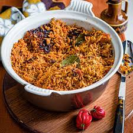
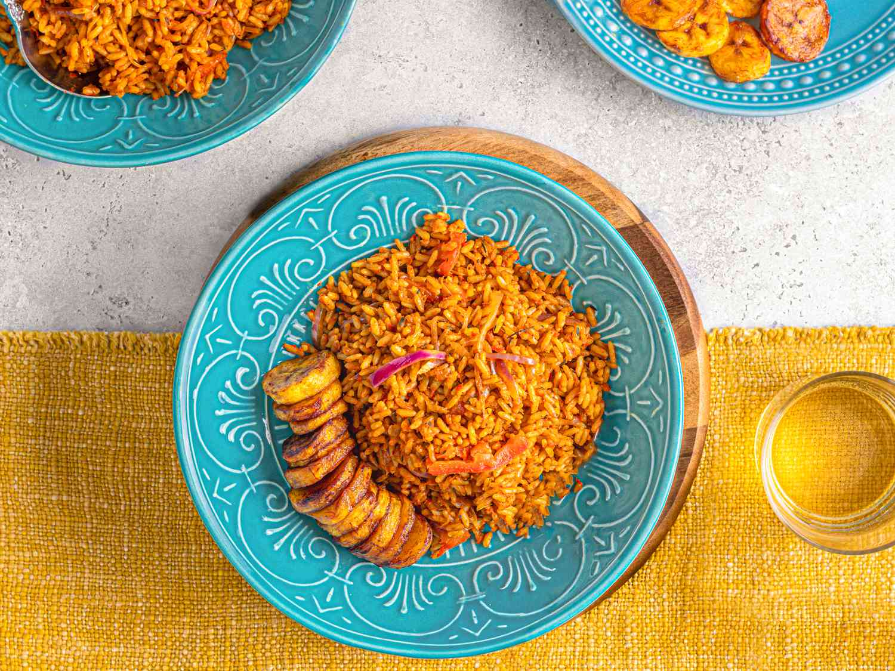

Martha's Jollof Rice Recipe

About
Jollof , or jollof rice, is a rice dish from West Africa. The dish is typically made with long-grain rice, tomatoes, onions, spices, vegetables and meat in a single pot, although its ingredients and preparation methods vary across different region.
The origin story of jollof rice is one origin story close to my heart, because it truly speaks of the connection between West African cuisine and modern-day Southern "red" cuisine. It originated in modern day Senegal, from the Wollof people.
As Portuguese trading posts were set up on the Senegal River Delta, tomatoes made their way to West Africa.
It's commonly believed that a shortage of barley led a local cook to use rice, and modern-day jollof rice was born (called Benachin, aka, one pot).
One school of thought suggests that the influence of jollof rice has been felt in the American South, where West African slaves from rice-growing regions introduced the "red rice" concept. Modern-day dishes like jambalaya and gumbo are believed to derive some influence from jollof rice!
Ingredients
There are many different ways to cook Jollof Rice.
If it doesn’t have the following ingredients, then it’s not true Jollof.
| Ingredient |
Measurements |
| Tomatoes |
3 medium size |
| Red bell pepper |
1 large size |
| red onion |
1/2(6 to 7 ounces) |
| ginger |
1(1 inch) piece |
| basmatic rice |
4 cups |
| tomato paste |
3 tablespoons |
| vegetable oil |
1/2 cup |
| curry powder |
2 teaspoons |
| dried thyme |
1 teaspoon |
Directions
- Prepare the following, adding each to the blender as you complete it: Coarsely chop 1/2 large red onion, peel 1-inch piece ginger and coarsely chop (about 1 tablespoon), trim the stem from 1/2 to 1 habanero pepper, add 5 garlic cloves and blend on high speed until smooth, about 1 minute.
- Pour the mixture into a medium saucepan and bring to a boil over medium heat. Continue to cook, stirring occasionally, for 15 minutes. The mixture will thicken slightly and turn bright red.
- Thinly slice 1/2 large red onion. Place 4 cups long-grain white rice in a fine-mesh strainer and rinse thoroughly under cool running water. Set aside to drain.
- Heat 1/2 cup vegetable oil in a large pot or Dutch oven over medium heat until shimmering. Add the onions and cook until translucent, 4 to 5 minutes. Add 3 tablespoons tomato paste, 1 tablespoon kosher salt, 2 teaspoons curry powder, 4 fresh thyme sprigs or 1 teaspoon dried thyme, 1 teaspoon ground white pepper, and 2 bay leaves. Stir and cook until the paste has darkened in color, 2 to 3 minutes.
- Pour in the red pepper base and 3 cups stock. Stir to combine and bring to a simmer. Continue to cook over medium heat, stirring occasionally, for 15 minutes.
- Add the rice and stir until combined. Reduce the heat to low and cover the pot with aluminum foil and then the lid. Cook undisturbed for 30 minutes.
- Remove the lid and foil and gently fluff the rice. Remove and discard the bay leaves and thyme sprigs. If the rice tastes a bit undercooked, remove from the heat, cover again, and let sit for 10 minutes. Don’t worry if the rice burns a bit at the bottom of the pot. This is part of what contributes a smoky flavor to the dish, and some people actually prefer this part! Taste and season the rice with more kosher salt as needed.


